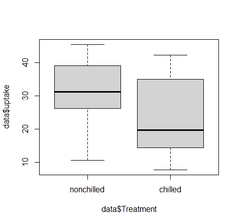

The t-test is the most basic type of staticial test.
It consists of comparing the mean between two groups of data to detrmine if they are signicantly different.
To illustrate the t-test, I will perform a sample t-test in two statistical progarms. R and Python.
The data utilized will be sample data provided in R (CO2 data). The dataset is titled "Carbon Dioxide Updtate in Grass Plants".
There are five variables of data, and 84 observations.
The five variables consist of the following. Plant, Type, Treatment, conc, uptake
Plant:6 Levels [Qn1, Qn2, Qn3, Qc1, Qc2, Qc3] each with 7 observations.
Type: 2 Levels [Quebec, Mississippi] each with 42 observations.
Treatment: 2 levels [Chilled, nonchilled] each with 42 observations.
conc: A continous variable represnting the carbon dioxide concentration
uptake: A continous variable represnting the carbon dioxide uptake rate
The experiment consisted of taking 42 plants from Mississippi and 42 plants from Quebec. Treating them under with two treatments:chilled nonchilled.
And measuring their CO2 intake while taking into consideration the ambiend concentration of CO2.
Step 1: To obtain the data from R, we simply generate a dataframe with the following code. "data = CO2"
Step 2: Export the data to be able to repeat the same test in python with the following code. "write.table(data, "data.txt",sep="\t")"
Step 3: Next we will plot the updtake data based on the treatment type to visualize the mean value. "plot(data$uptake ~ data$Treatment)"

Step 4: Visually, we can see higher values of uptake for nonchilled treatments. Subsetting the data for each and estimating the mean reusults in the following: